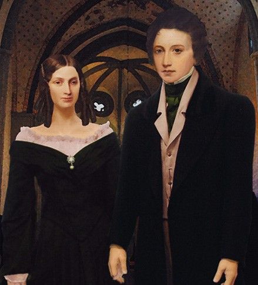

Welcome to the Mini-Digital edition of Mary Shelley's Frankenstein, made as a project for Text as Data II, taught at the University of Antwerp as part of the Digital Text Analysis Master's Program
Student Name: Hazel Mehta
Course: DTA (2023-2024) - Text as Data II
Submission Date: 22.01.2024